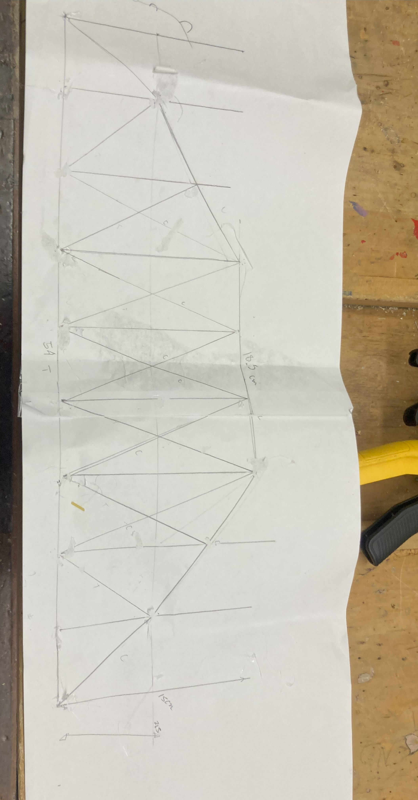
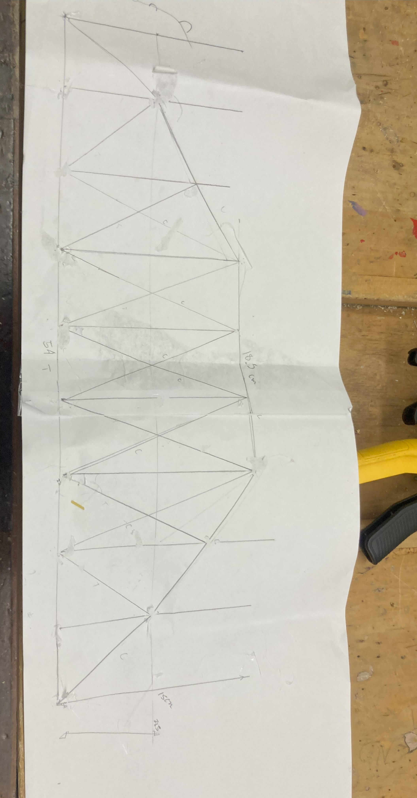
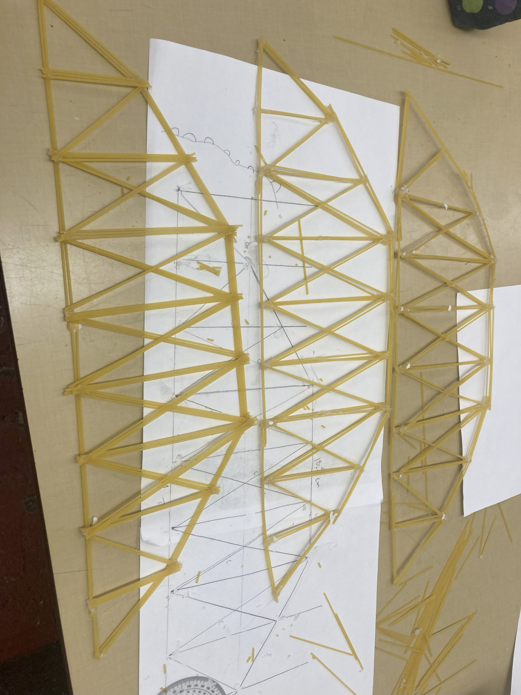

When thinking about the next design we observed other bridges worked well with a rounded top. So we decided to work that into our design and chose a camelback design. This is what our template looked like.
.jpg) 

We learned from our previous bridge that you don’t need to pile on the spaghetti for the whole bridge. We applied that idea to our bridge and cut down the amount of spaghetti to only 3 pieces for areas in compression and 2 for tension. When building the trusses out for the bridge we made a mistake on the second truss. The truss was off the design by quite a bit and that would bring our score down quite a bit. We needed to remake the whole truss. We had to be very careful about the amount of spaghetti, and glue sticks as the supplies were already low.
our bridge had a failure mode of joint failure on the abutments and held up 2.800 kg or 6 pounds.
While building the third truss we found that doing the outline of the truss made it a lot easier to build the rest of the bridge and be almost exact to the template. We will be bringing that technique to the third and final design.